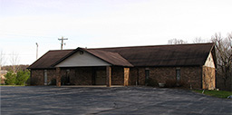
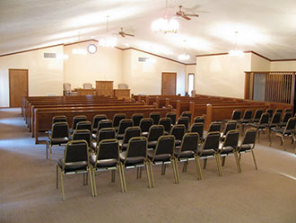
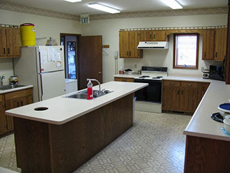
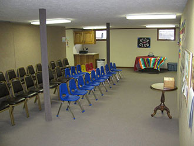
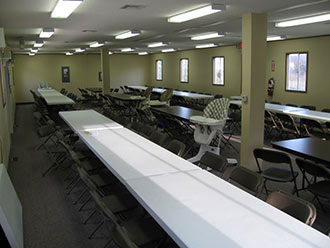
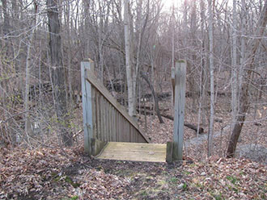

|
|
|
|
HOME
ABOUT US
mission
identity
conviction
leaders
WORSHIP
services
approach
sermons
location
CALENDAR
CONTACT
|
|
Contact: (765) 320-0077
Services: 9 a.m. (worship), 5:30 p.m. (teaching service & sunday school)
Directions: map
|
|
Jared Olivetti, Pastor
e: jared@immanuelrpc.com
ph: (765) 320-0077 ad: 1893 E 600 N, West Lafayette, IN 47906 David Carr, Elder
e: david@davidkarencarr.net
ph: (765) 583-4494 Ben Larson, Elder
e: larsons@realemail.net
ph: (765) 743-2644 (home) ph: (765) 477-3550 (work) |
Eric Bibby, Deacon
e: ericbibby@gmail.com
ph: (765) 412-6984 Bart Saunders, Deacon
e: bsaunders@indianafiber.net
ph: (765) 426-8694 Webmaster
e: web@immanuelrpc.com
|
But why are we here - why this church in this city? We're here because we're convinced that the city and the people of West Lafayette belong to their Creator God and that Christ has much glory to gain from expanding His kingdom here. West Lafayette is a college town of close to 30,000, a number which more than doubles during the academic year. It is a city steeped in intellectual prowess and pride - a city that, more than most, has incredible opportunities to reach the whole world. But it's also a city that lacks a clear, Biblical witness for the doctrines of grace.
While sometimes frustrated with certain prevailing sins, we love West Lafayette and want to see it brought into the service and worship of our King. We trust there are many of God's elect here and we pray He will use us to gather them into the kingdom. We also believe there are many who are longing for a church that proclaims and practices the Word of God with warmth and clarity and conviction.
Like you, our name doesn't tell the whole story. If you take the bold step of visiting, you'll find an imperfect group of people, struggling to walk by faith, struggling to love each other with Jesus' love, struggling to show others that same love. We don't mind being weak because it lets Jesus shine through. You'll find a lot of little kids, who are some of our greatest blessings from God. You'll find a church family centered on the Bible-reading, studying, memorizing, singing and preaching it.
We believe the Bible is totally true and fully authoritative because it is God's Word.
We believe the Nicene Creed teaches well what the Bible reveals about God and salvation.
And in one Lord Jesus Christ, the only-begotten Son of God, begotten of the Father before all worlds; God of God, Light of Light, very God of very God; begotten, not made, being of one substance with the Father, by whom all things were made.
Who, for us men and for our salvation, came down from heaven, and was incarnate by the Holy Spirit of the virgin Mary, and was made man; and was crucified also for us under Pontius Pilate; He suffered and was buried; and the third day He rose again, according to the Scriptures; and ascended into heaven, and sits on the right hand of the Father; and He shall come again, with glory, to judge the quick and the dead; whose kingdom shall have no end.
And I believe in the Holy Ghost, the Lord and Giver of Life; who proceeds from the Father and the Son; who with the Father and the Son together is worshipped and glorified; who spoke by the prophets.
And I believe in one holy catholic and apostolic Church. I acknowledge one baptism for the remission of sins; and I look for the resurrection of the dead, and the life of the world to come. Amen.
We are a confessional church. This means we submit ourselves to the Bible as the ultimate standard and also to the summaries of the Bible's truth in our confession, catechisms (larger, shorter) and testimony.
As a reformed church, we believe that salvation...
Is by the grace of God alone, given through Jesus ChristWhile teaching in junior high, Jared began praying about God's call to become a pastor. After seeking counsel, he began an internship with Pastor Dave Long of the Lafayette RPC and then entered the RP seminary in Pittsburgh. Upon graduation in 2004, he became the associate pastor of the Lafayette RPC. Two years later, he was sent out and installed as the church planting pastor of IRPC.
Jared and Lisa, his wife of ten years, have four young children.
| Call to worship | |
| Psalm of praise | Psalm 98A |
| Invocation | |
| Scripture reading | Leviticus 25 |
| Psalm of confession | Psalm 31A |
| Promise of reconciliation | Romans 10:9 |
| Psalm of thanksgiving | Psalm 121A |
| Scripture reading | Habakkuk 2:4 |
| Sermon | Live by faith |
| Prayer of commitment | |
| Psalm of faith | Psalm 25A |
| Prayer of supplication | |
| Tithes and offerings | |
| Psalm of celebration | Psalm 3B |
| Benediction | |
| Doxology | Psalm 72F |
Why only Psalms? First, we believe it's what God wants us to do. Second, we absolutely love it. When we sing Psalms, we're singing God's Word, we're memorizing His Word, we're singing the songs that Jesus and the apostles sang and we're singing the only hymnbook the whole church can agree on. What could be better than that?
Why sing without instruments? Although it seems unusual, most of the church throughout history has recognized that instruments were an important part of the sacrificial system of Old Testament Israel. The book of Hebrews tells us that Jesus has perfectly fulfilled every nook and cranny of that sacrificial system. Thus, to use instruments in worship "would be no more suitable than the burning of incense, the lighting up of lamps, and the restoration of the other shadows of the law." (John Calvin)
In case you're wondering, we do love music and only hang up our guitars during worship.
|  |
Immanuel RPC
1893 E 600 N West Lafayette, IN 47906 (765) 320-0077 |
|

Sanctuary [front] Sanctuary [back]

Kitchen

Sunday School Classroom

Fellowship Hall

Trails Behind Church Trails Behind Church |